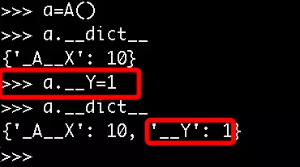

封装-----继承-----多态
封装 从封装本身的意思去理解，封装就好像是拿来一个麻袋，把小猫，小狗，小王八一起装进麻袋，然后把麻袋封上口子。照这种逻辑看，封装=‘隐藏’，这种理解是相当片面的
先看如何隐藏 在python中用双下划线开头的方式将属性隐藏起来（设置成私有的）
#其实这仅仅这是一种变形操作且仅仅只在类定义阶段发生变形
#类中所有双下划线开头的名称如__x都会在类定义时自动变形成：_类名__x的形式：
class A:
__N=0 #类的数据属性就应该是共享的,但是语法上是可以把类的数据属性设置成私有的如__N,会变形为_A__N
def __init__(self):
self.__X=10 #变形为self._A__X
def __foo(self): #变形为_A__foo
print('from A')
def bar(self):
self.__foo() #只有在类内部才可以通过__foo的形式访问到.
#A._A__N是可以访问到的，
#这种，在外部是无法通过__x这个名字访问到。
这种变形需要注意的问题是：
1.这种机制也并没有真正意义上限制我们从外部直接访问属性，知道了类名和属性名就可以拼出名字：_类名__属性，然后就可以访问了，如a._A__N，即这种操作并不是严格意义上的限制外部访问，仅仅只是一种语法意义上的变形，主要用来限制外部的直接访问。
2.变形的过程只在类的定义时发生一次,在定义后的赋值操作，不会变形

3.在继承中，父类如果不想让子类覆盖自己的方法，可以将方法定义为私有的
#正常情况
>>> class A:
... def fa(self):
... print('from A')
... def test(self):
... self.fa()
...
>>> class B(A):
... def fa(self):
... print('from B')
...
>>> b=B()
>>> b.test()
from B
#把fa定义成私有的，即__fa
>>> class A:
... def __fa(self): #在定义时就变形为_A__fa
... print('from A')
... def test(self):
... self.__fa() #只会与自己所在的类为准,即调用_A__fa
...
>>> class B(A):
... def __fa(self):
... print('from B')
...
>>> b=B()
>>> b.test()
from A
封装不是单纯意义的隐藏 封装的真谛在于明确地区分内外，封装的属性可以直接在内部使用，而不能被外部直接使用，然而定义属性的目的终归是要用，外部要想用类隐藏的属性，需要我们为其开辟接口，让外部能够间接地用到我们隐藏起来的属性，那这么做的意义何在？？？
1：封装数据：将数据隐藏起来这不是目的。隐藏起来然后对外提供操作该数据的接口，然后我们可以在接口附加上对该数据操作的限制，以此完成对数据属性操作的严格控制。
class Teacher:
def __init__(self,name,age):
# self.__name=name
# self.__age=age
self.set_info(name,age)
def tell_info(self):
print('姓名:%s,年龄:%s' %(self.__name,self.__age))
def set_info(self,name,age):
if not isinstance(name,str):
raise TypeError('姓名必须是字符串类型')
if not isinstance(age,int):
raise TypeError('年龄必须是整型')
self.__name=name
self.__age=age
t=Teacher('egon',18)
t.tell_info()
t.set_info('egon',19)
t.tell_info()
2：封装方法：目的是隔离复杂度
封装方法举例：
2.1 你的身体没有一处不体现着封装的概念：你的身体把膀胱尿道等等这些尿的功能隐藏了起来，然后为你提供一个尿的接口就可以了（接口就是你的。。。，），你总不能把膀胱挂在身体外面，上厕所的时候就跟别人炫耀：hi，man，你瞅我的膀胱，看看我是怎么尿的。
2.2 电视机本身是一个黑盒子，隐藏了所有细节，但是一定会对外提供了一堆按钮，这些按钮也正是接口的概念，所以说，封装并不是单纯意义的隐藏！！！
2.3. 快门就是傻瓜相机为傻瓜们提供的方法，该方法将内部复杂的照相功能都隐藏起来了
提示：在编程语言里，对外提供的接口（接口可理解为了一个入口），可以是函数，称为接口函数，这与接口的概念还不一样，接口代表一组接口函数的集合体。
#取款是功能,而这个功能有很多功能组成:插卡、密码认证、输入金额、打印账单、取钱
#对使用者来说,只需要知道取款这个功能即可,其余功能我们都可以隐藏起来,很明显这么做
#隔离了复杂度,同时也提升了安全性
class ATM:
def __card(self):
print('插卡')
def __auth(self):
print('用户认证')
def __input(self):
print('输入取款金额')
def __print_bill(self):
print('打印账单')
def __take_money(self):
print('取款')
def withdraw(self):
self.__card()
self.__auth()
self.__input()
self.__print_bill()
self.__take_money()
a=ATM()
a.withdraw()
特性(property) 什么是特性property
property是一种特殊的属性，访问它时会执行一段功能（函数）然后返回值
例一：BMI指数（bmi是计算而来的，但很明显它听起来像是一个属性而非方法，如果我们将其做成一个属性，更便于理解）
成人的BMI数值：
过轻：低于18.5
正常：18.5-23.9
过重：24-27
肥胖：28-32
非常肥胖, 高于32
  体质指数（BMI）=体重（kg）÷身高^2（m）
  EX：70kg÷（1.75×1.75）=22.86
class People:
def __init__(self,name,weight,height):
self.name=name
self.weight=weight
self.height=height
@property
def bmi(self):
return self.weight / (self.height**2)
p1=People('egon',75,1.85)
print(p1.bmi)
例二：圆的周长和面积
import math
class Circle:
def __init__(self,radius): #圆的半径radius
self.radius=radius
@property
def area(self):
return math.pi * self.radius**2 #计算面积
@property
def perimeter(self):
return 2*math.pi*self.radius #计算周长
c=Circle(10)
print(c.radius)
print(c.area) #可以向访问数据属性一样去访问area,会触发一个函数的执行,动态计算出一个值
print(c.perimeter) #同上
'''
输出结果:
314.1592653589793
62.83185307179586
'''
#注意：此时的特性arear和perimeter不能被赋值c.area=3 #为特性area赋值'''抛出异常: AttributeError: can't set attribute'''
为什么要用property
将一个类的函数定义成特性以后，对象再去使用的时候obj.name,根本无法察觉自己的name是执行了一个函数然后计算出来的，这种特性的使用方式遵循了统一访问的原则
除此之外，看下
ps：面向对象的封装有三种方式:
【public】
这种其实就是不封装,是对外公开的
【protected】
这种封装方式对外不公开,但对朋友(friend)或者子类(形象的说法是“儿子”,但我不知道为什么大家
不说“女儿”,就像“parent”本来是“父母”的意思,但中文都是叫“父类”)公开
【private】
这种封装对谁都不公开
python并没有在语法上把它们三个内建到自己的class机制中，在C++里一般会将所有的所有的数据都设置为私有的，然后提供set和get方法（接口）去设置和获取，在python中通过property方法可以实现
class Foo:
def __init__(self,val):
self.__NAME=val #将所有的数据属性都隐藏起来
@property
def name(self):
return self.__NAME #obj.name访问的是self.__NAME(这也是真实值的存放位置)
@name.setter
def name(self,value):
if not isinstance(value,str): #在设定值之前进行类型检查
raise TypeError('%s must be str' %value)
self.__NAME=value #通过类型检查后,将值value存放到真实的位置self.__NAME
@name.deleter
def name(self):
raise TypeError('Can not delete')
f=Foo('egon')
print(f.name)
# f.name=10 #抛出异常'TypeError: 10 must be str'
del f.name #抛出异常'TypeError: Can not delete
多态 多态指的是一类事物有多种形态
动物有多种形态：人，狗，猪
import abc
class Animal(metaclass=abc.ABCMeta): #同一类事物:动物
@abc.abstractmethod
def talk(self):
pass
class People(Animal): #动物的形态之一:人
def talk(self):
print('say hello')
class Dog(Animal): #动物的形态之二:狗
def talk(self):
print('say wangwang')
class Pig(Animal): #动物的形态之三:猪
def talk(self):
print('say aoao')
文件有多种形态：文本文件，可执行文件
import abc
class File(metaclass=abc.ABCMeta): #同一类事物:文件
@abc.abstractmethod
def click(self):
pass
class Text(File): #文件的形态之一:文本文件
def click(self):
print('open file')
class ExeFile(File): #文件的形态之二:可执行文件
def click(self):
print('execute file')
多态性 什么是多态动态绑定（在继承的背景下使用时，有时也称为多态性）多态性是指在不考虑实例类型的情况下使用实例
在面向对象方法中一般是这样表述多态性：向不同的对象发送同一条消息（！！！obj.func():是调用了obj的方法func，又称为向obj发送了一条消息func），不同的对象在接收时会产生不同的行为（即方法）。也就是说，每个对象可以用自己的方式去响应共同的消息。所谓消息，就是调用函数，不同的行为就是指不同的实现，即执行不同的函数。 比如：老师.下课铃响了（），学生.下课铃响了()，老师执行的是下班操作，学生执行的是放学操作，虽然二者消息一样，但是执行的效果不同
多态性分为静态多态性和动态多态性
静态多态性：如任何类型都可以用运算符+进行运算
动态多态性：如下
peo=People()
dog=Dog()
pig=Pig()
#peo、dog、pig都是动物,只要是动物肯定有talk方法
#于是我们可以不用考虑它们三者的具体是什么类型,而直接使用
peo.talk()
dog.talk()
pig.talk()
#更进一步,我们可以定义一个统一的接口来使用
def func(obj):
obj.talk()
为什么要用多态性（多态性的好处）
其实大家从上面多态性的例子可以看出，我们并没有增加什么新的知识，也就是说python本身就是支持多态性的，这么做的好处是什么呢？
1.增加了程序的灵活性
以不变应万变，不论对象千变万化，使用者都是同一种形式去调用，如func(animal)
2.增加了程序额可扩展性
通过继承animal类创建了一个新的类，使用者无需更改自己的代码，还是用func(animal)去调用
class Cat(Animal): #属于动物的另外一种形态：猫
def talk(self):
print('say miao')
def func(animal): #对于使用者来说，自己的代码根本无需改动
animal.talk()
cat1=Cat() #实例出一只猫
func(cat1) #甚至连调用方式也无需改变，就能调用猫的talk功能
say miao
'''
这样我们新增了一个形态Cat，由Cat类产生的实例cat1，使用者可以在完全不需要修改自己代码的情况下。
使用和人、狗、猪一样的方式调用cat1的talk方法，即func(cat1)
'''
鸭子类型
逗比时刻：
Python崇尚鸭子类型，即‘如果看起来像、叫声像而且走起路来像鸭子，那么它就是鸭子,python程序员通常根据这种行为来编写程序。例如，如果想编写现有对象的自定义版本，可以继承该对象
也可以创建一个外观和行为像，但与它无任何关系的全新对象，后者通常用于保存程序组件的松耦合度。
例1：利用标准库中定义的各种‘与文件类似’的对象，尽管这些对象的工作方式像文件，但他们没有继承内置文件对象的方法
#二者都像鸭子,二者看起来都像文件,因而就可以当文件一样去用
class TxtFile:
def read(self):
pass
def write(self):
pass
class DiskFile:
def read(self):
pass
def write(self):
pass
例2：其实大家一直在享受着多态性带来的好处，比如Python的序列类型有多种形态：字符串，列表，元组，多态性体现如下
#str,list,tuple都是序列类型
s=str('hello')
l=list([1,2,3])
t=tuple((4,5,6))
#我们可以在不考虑三者类型的前提下使用s,l,t
s.__len__()
l.__len__()
t.__len__()
len(s)
len(l)
len(t)